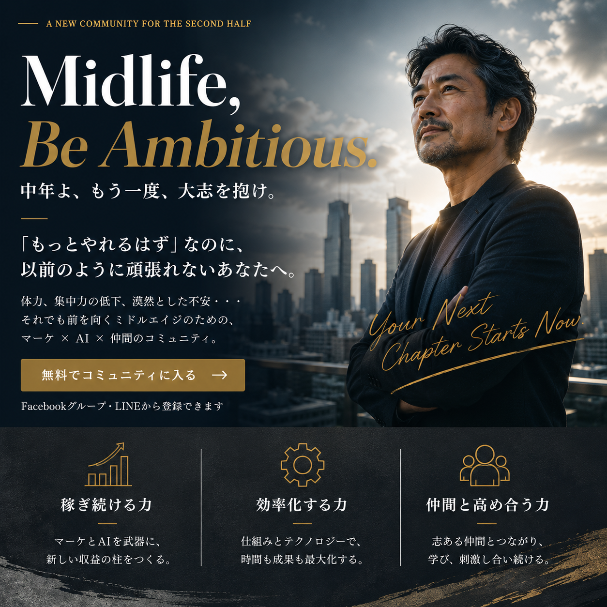

僕たちはその日、本当に幸せに成功する方法が何かを、
東京・五反田のもつ焼き屋で語っていた。
20代で出会い、マーケの世界にどっぷりと浸かり、
独立したり、会社を経営したり、それぞれの道に進みつつ、
十数年ぶりに3人で集まった。
煙と熱気が充満したお店の中で、
もつ焼きとレモンサワーを片手に話題に上がったのが、
「中年が楽しく、幸せに成功するには？」
というテーマ。
僕たちは40代。
出会ったときはまだ怖いもの知らずの20代で、
体力任せでやりたいことをブルドーザーのように進めることができた若者だった。
そして3人は立派な中年になった。
これから40代、50代、60代になっていく僕たち3人は、
20代、30代の頃と同じくらいに、いやそれ以上に、
心がときめくようなワクワクする毎日を生きて
第2、第3の青春を謳歌していきたいと思っている。
でも若いときのような戦い方では、
これから先、幸せに成功することは難しいと思っている。
お互いどれだけの収入があるのか、
どれだけの資産があるのかは話さないけど、
それぞれ会社を経営し
平均的な人よりも自由で豊かな暮らしはできている。
「でも、それだけじゃ物足りない」
そう感じるようにもなった。
そして五反田のもつ焼き屋で、
アイデアが浮かんだんです。
「同じ中年以降を熱く生きる仲間と一緒に
面白いことをやれたらいいよね」
「中年よ大志を抱け！って感じで、
おじさん、おばさんになっても熱量高く
人生を楽しむコミュニティを作ってみない？」
と。
「いいね！やろうよ！」
と、若者みたいなノリで始まったのが
今回の企画でありコミュニティという場。
まずはこのページを最後まで読んでみて、
「なかなか面白そうじゃないか」
と、あなたが共感する部分があったら、
まずは僕たちの仲間になって欲しい。
中年よ大志を抱け。
そうすることで世界はもっと面白くなるし、
僕たちの人生は間違いなく胸がときめくものになる。
少し長いメッセージになりますが、
今から10分ほど時間をとって僕たちの思いとアイデアに
耳を傾けて欲しい。
一つ仮説を立ててみた。
「20代・30代のゲームを、40代以降もやり続けているから詰まる」のではないか、と。
20代・30代のゲームは「増やす・広げる・証明する」だった。
売上を増やす、人脈を広げる、自分の実力を証明する。
このモードで走り続けると、どこかで必ず壁にぶち当たる。
なぜなら、40代以降は別のゲームに入っているからだ。
20代・30代の頃、私たちは「弱みを見せたら負け」と思っていました。
背伸びをして、できないことを「できる」と言って、
自分を実際より大きく見せて、無理をして帳尻を合わせる。
それが戦い方だったし、そのモードで通用してきた。
でも40代に入って、それを続けるのがしんどくなってきた。
背伸びし続けると、足がつる。
40代以降の戦い方は、真逆です。
背伸びを下ろす。等身大で勝負する。
隠してきたものを、出してみる。
社員にも取引先にも家族にも言えなかったことを、
同じ立場の人間と話す。
瞬発力で押し切るのではなく、長く続けられる仕組みを作る。
「AIコミュニティじゃないの？」と思った方もいるかもしれません。
違います。マーケティングが主軸です。
何かを成し遂げる、世の中に何かを投げかけて反応を得る——
そのためには、マーケティングの知識が絶対に必要です。
事業として収益を得て、再投資する活動を回すには「稼ぐスキル」が必要。
発信もコミュニティ作りも、どういう価値を、どんな悩みに、どう伝えるかのマーケ視点が要る。
そして——ここが大事です。
デザインも、文章作成も、動画も、これからどんどん AI に代替されていきます。
でも、マーケのスキル・アイデアは、AIが出てきてから、むしろ重要性を増している。
私たちの20年で一番確かな知見が、マーケティングにあります。
このコミュニティでは、そのマーケを突き詰めて習得し、AIで効率化していきます。
私たちの強みは、AIにはない。マーケにある。
MBA（ミッドライフ・ビーアンビシャス）は、
3つの軸で動きます。
目標型マーケティングは消耗します。
「今月の数字を達成しろ」「キャンペーンを回せ」——
これを繰り返すほど、疲弊が溜まっていく。
一方、価値観型マーケティングは逆です。
「なぜこれをやるのか」「誰の何を変えたいのか」が明確だと、
コンテンツにも営業にも一本筋が通る。
このコミュニティでは、「なぜやりたいか」をベースに置いたマーケティングの組み立て方を、一緒に考えていきます。
40代以降、体力・思考体力・新しいことをやる馬力が落ちてきます。
若い頃のような 「ブルドーザー的働き方」 はもうできない。
「これやりたい」と思っても、「これもこれもめんどくさい」で一歩踏み出せない。
そんな経験、ないですか？
その億劫な部分を、AIに補ってもらうのがMBAの考え方です。
「AIを勉強する」ではなく「AIを仕事に差し込む」。
会議の議事録、提案書のドラフト、数字のレポーティング——
中年世代が日常的に抱えている業務の中で、AIがどこに入るかを具体的にやってみる場にします。
Claude Code、ChatGPT、その他の生成AIを用途別に使い分ける話も、事例ベースで扱います。
狙いはただ一つ。心からやりたいことに、もう一度エネルギーを注げる状態を取り戻すこと。
これがMBAの中核です。
「経営の話が正直にできる仲間がいない」という人は、意外と多いです。
社員には言えない。取引先には言えない。家族には心配かけたくない。
そして20代・30代に染み込んだ「弱みを見せたら負け」のクセが、40代でも抜けない。
だから一人で抱えてしまう。
このコミュニティは、その逆を意図的にやる場所です。
ビジネス以外の話もします。
松井は運動の話をよくする。体を動かすことで仕事の質が変わるという話は、40代以降には特に刺さる。
ホリエモンが「社会人には体育がない」と言ったのは本当にそうで、
放っておくと動かなくなる。
健康、食事、お金の管理、芸術——
中年が本当は話したいけど「経営の話じゃない」と後回しにしてきたテーマを、ゲスト講師も交えながら扱います。
サロンなど小規模事業者・個人起業家向けのマーケコンサルを本業に持ちながら、AI×マーケの実践を深めている。
「価値観型マーケティング」を自分の事業で実践してきた人間。
「目標型マーケは消耗する」という言葉は、
彼が20年かけて辿り着いた結論です。
ニッチなビジネスを複数立ち上げ、バイアウトも経験している。
「数字を作る」だけでなく「出口まで設計する」視点を持っている。
運動の話をよくします。
「体を動かさなくなった40代は早く詰まる」と昔から言い続けている人です。
マーケティング歴20年。最初の仕事は、キャッチ（アフィリエイト・ASP業界）でした。
そこから独立し、C-linksを設立。整骨院のLP制作・集客コンサル、歯科業界のマーケ支援など、小さな事業を複数並走させています。
1982年生まれ。自分自身が「戦い方を変えている途中」です。
いまやっていることを一言で言うと「小さな事業を複数並走させて、コントロールを握る」。
売上も、働く時間も、続けるか辞めるかの判断も、全部自分で決められる状態を作ること——これが2026年のテーマです。
大前研一がこんなことを言っていた——
人が変わるための3つの要素は、時間配分・住む場所・付き合う人だと。
行動計画を立て直すのは自分でできる。
でも「付き合う人」だけは、環境を変えないと変わらない。
40代で本音を話せる仲間がいる環境は、思ったより少ないです。
このコミュニティがその一つになれたら、それだけでも来た価値があると思っています。
40代以降は、利害関係があったり、肩書きで判断されたり——
純粋な仲間関係を作るのが難しい。
会社にも、業界にも、SNSにも、人はたくさんいる。
でも、「本音で話せる、純粋な仲間」は、なかなか見つからない。
このMBAは、利害関係から離れた、純粋な仲間関係を作る場所です。
一緒に高め合って、青春し合える——
そんな関係を、この場で築けたらと思っています。
よく「人生100年時代」という言葉が出てくる。
でも実感している人はほとんどいないと思う。
私も正直、頭では分かっていても体感していなかった。
でも計算してみると、40代前半はまだ折り返しにすら達していない。
45歳が折り返しだとしても、残りはあと55年ある。
20代の頃に「40歳でこんな人になっていたい」と思い描いた自分に、
まだなれていないとしたら——残り時間は十分にある。
ただし、20代の戦い方のままでいれば、
次の20年も同じ詰まり方をする。
このコミュニティは、面談を含めた審査制にしています。
理由は単純で、本気で仲間として一緒に走れる人だけに集まってほしいから。
テイカー（もらうだけの人）が一人でも入ると、
場の空気が一気に変わってしまうことを、3人とも経験で知っています。
質の高い仲間と、長く付き合う。
これがMBAのスタンスです。
MBAは、無料のコミュニティからスタートします。
Facebookグループで、3人の日常の話や事業の話を流していきます。
セミナーは月に数回、ライブで開催します。
押し売りはしません。
合わなければ抜けてください。
「面白そうだな」と思ったら、それだけで十分です。